Cuccioli è la collana di quaderni di Officina Laerte dedicata ai cani. In copertina c'è sempre lui: il Jack Russell che non sta fermo un secondo, il Bulldog testardo e dolcissimo, il Chihuahua dal carattere enorme, lo Schnauzer con i baffi da vecchio saggio. Alcune copertine sono ritratti, altre giocano con il pop art o con piccoli travestimenti: il re e la regina di casa, il supereroe, l'archeologo.
Dentro trovi pagine a righe o bianche, nel formato pratico 15,24 x 22,86 cm: vanno bene per la scuola, per gli appunti di tutti i giorni, per le liste e i pensieri. Sono un regalo piccolo e personale per compleanni, Natale, la fine della scuola o per chi ha appena adottato un cucciolo. Per chi vuole tenere i dati del proprio cane in ordine c'è anche la carta d'identità del cane gratuita da stampare, e per chi sta per accogliere un cucciolo la lista di cosa serve quando arriva. Cerchi un regalo per un amico cinofilo? Ecco 15 idee sotto i 20 euro.
Jack Russell
Carattere e cure del Jack Russell →
 Regina Jack RussellQuaderno pagine bianche, 15,24 x 22,86 cmSu Amazon →
Regina Jack RussellQuaderno pagine bianche, 15,24 x 22,86 cmSu Amazon →- Il re della casaQuaderno pagine bianche, 15,24 x 22,86 cmSu Amazon →
 Jack Russell supereroeQuaderno pagine bianche, 15,24 x 22,86 cmSu Amazon →
Jack Russell supereroeQuaderno pagine bianche, 15,24 x 22,86 cmSu Amazon →- Blocco note Jack RussellQuaderno pagine bianche, 15,24 x 22,86 cmSu Amazon →
- Jack Russell a scuolaQuaderno pagine bianche, 15,24 x 22,86 cmSu Amazon →
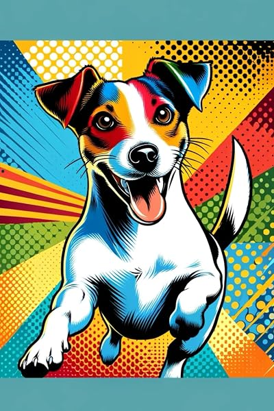
Quaderno Jack RussellQuaderno a righe, 15,24 x 22,86 cmSu Amazon →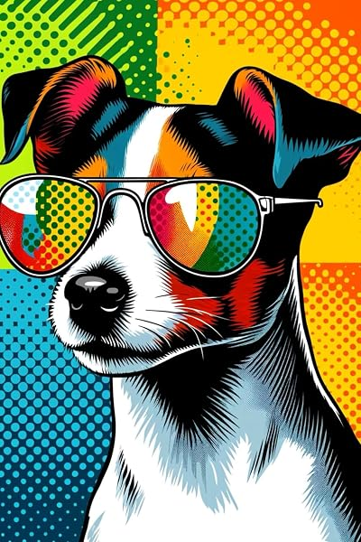
Diario Jack RussellQuaderno a righe, 15,24 x 22,86 cmSu Amazon →
Bulldog inglese
Carattere e cure del Bulldog inglese →
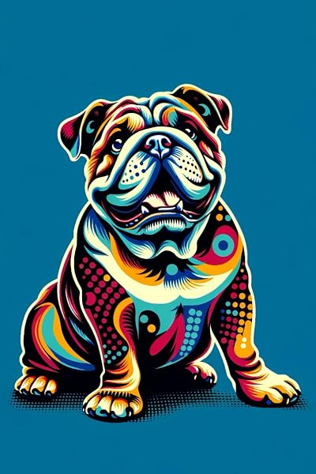
Diario BulldogQuaderno pagine bianche, 15,24 x 22,86 cmSu Amazon →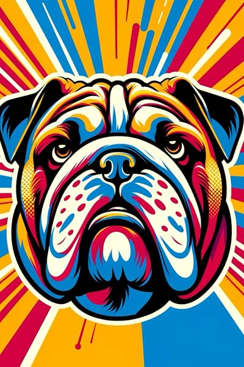
Quaderno BulldogQuaderno pagine bianche, 15,24 x 22,86 cmSu Amazon →
Bulldog francese
Carattere e cure del Bulldog francese →
 Quaderno Bulldog francese
Quaderno Bulldog franceseChihuahua
Carattere e cure del Chihuahua →
 Quaderno ChihuahuaQuaderno a righe, 15,24 x 22,86 cmSu Amazon →
Quaderno ChihuahuaQuaderno a righe, 15,24 x 22,86 cmSu Amazon →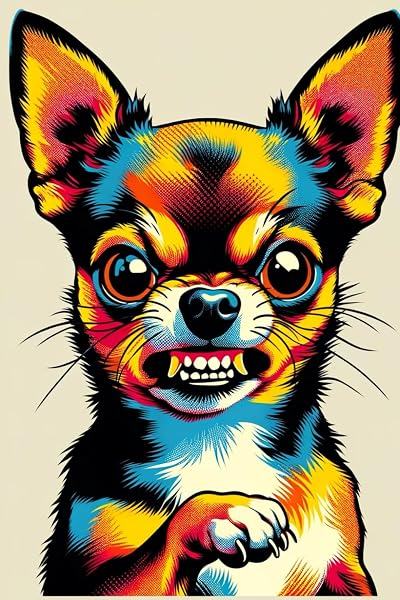
Chihuahua pop artQuaderno a righe, 15,24 x 22,86 cmSu Amazon →
Schnauzer
Carattere e cure del Schnauzer →
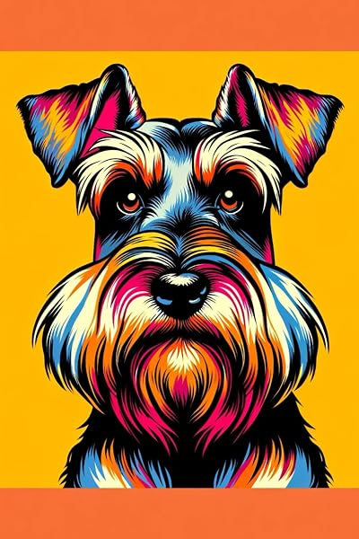
Quaderno SchnauzerQuaderno a righe, 15,24 x 22,86 cmSu Amazon →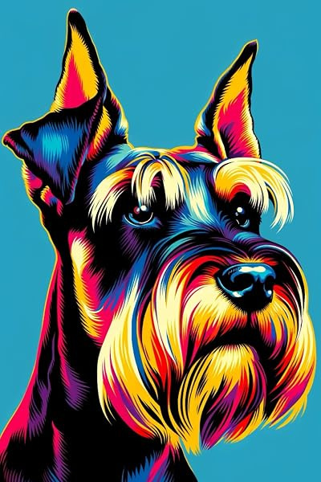
Taccuino SchnauzerQuaderno a righe, 15,24 x 22,86 cmSu Amazon →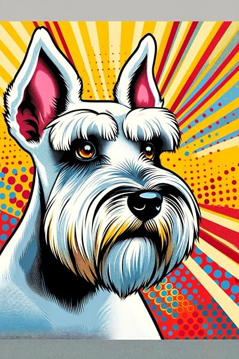
Album SchnauzerQuaderno a righe, 15,24 x 22,86 cmSu Amazon →
Dalmata
Carattere e cure del Dalmata →
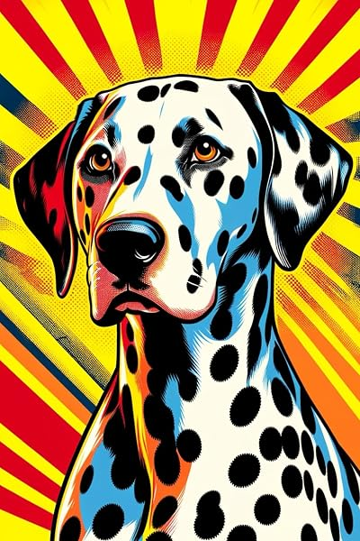
Agenda DalmataQuaderno a righe, 15,24 x 22,86 cmSu Amazon → Quaderno DalmataQuaderno a righe, 15,24 x 22,86 cmSu Amazon →
Quaderno DalmataQuaderno a righe, 15,24 x 22,86 cmSu Amazon →
Staffordshire Bull Terrier
Carattere e cure del Staffordshire Bull Terrier →
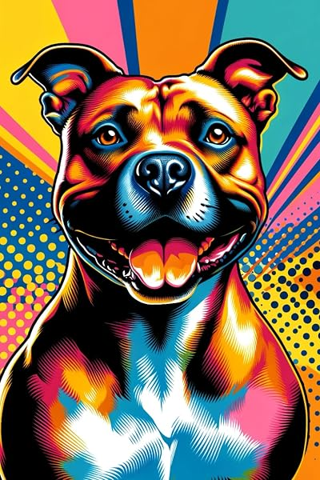
Quaderno StaffyQuaderno a righe, 15,24 x 22,86 cmSu Amazon →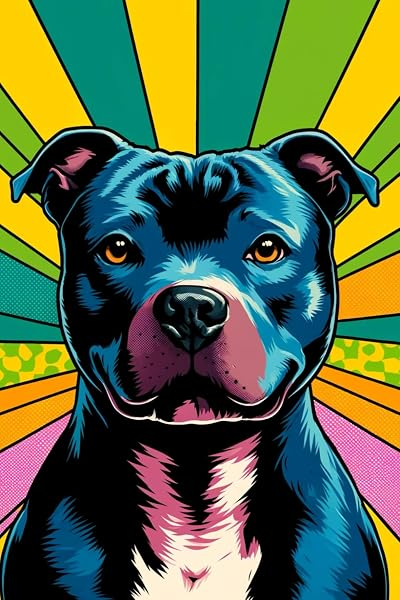
Diario StaffordshireQuaderno a righe, 15,24 x 22,86 cmSu Amazon →
Cane Corso
Carattere e cure del Cane Corso →
 Cane Corso archeologo
Cane Corso archeologoFox Terrier
Carattere e cure del Fox Terrier →